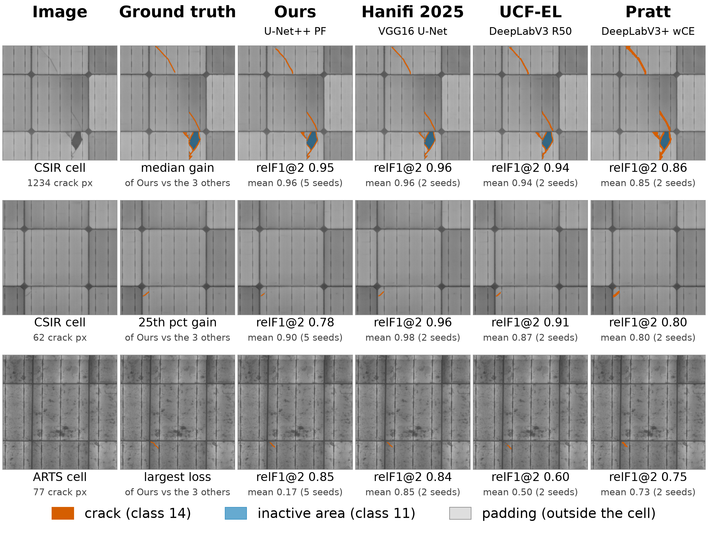
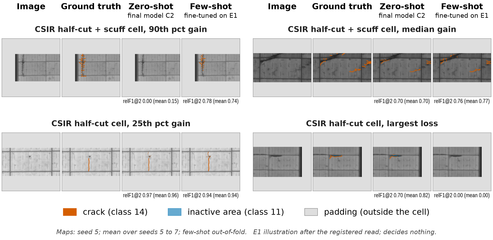
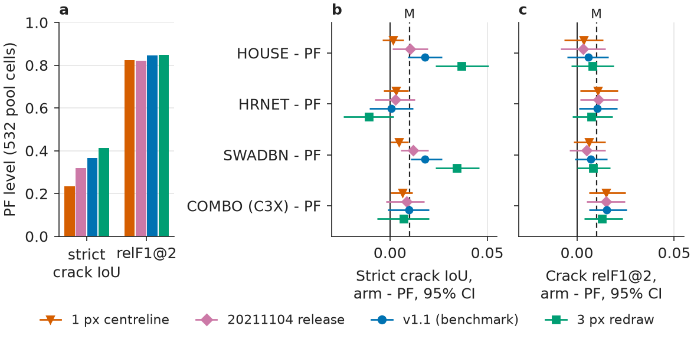

final models scored once, rule fixed before the read
test50: legacy test
50 cells; 8 also in the pool
context only
Experiments: research path
Period
Question
Finding
7 to 20 Oct
Does semi-supervised learning help?
yes at 5% labels; n.d. at 20 to 100%
21 Oct to 14 Nov
Do recent methods help at full labels?
mostly n.d.; kept the PF fine-tune
12 to 23 Nov
Measured fairly, what actually helps?
small confirmed gain on unseen modules; target-layout labels help most (few-shot +0.22, a different contrast)
Each verdict comes from a rule written before its runs; exploratory reads are labelled as such.
Experiments I: semi-supervised
Mean Teacher with separate BatchNorm, 5 seeds per arm.
The gain shrinks as labels grow.
Bars = seed sd. Inactive sits in 16 test cells (3 hold 59% of its pixels). 5% verdict: +0.117 [+0.042, +0.189], image bootstrap. 100% SSL used an external pool (11,938 cells). No 10% arm. Crack: n.d. at 20 to 100%.
Experiments II: what we tried
Method
Source
Labels
vs supervised baseline
Verdict
Legacy protocol (test50)
Mean Teacher + CutMix (SSL)
NeurIPS 2017
5%
inactive IoU +0.117
helps at 5%
Mean Teacher, no CutMix
20–100%
n.d.
n.d.
SKCDF parts (decoupled decoder, balanced head)
CVPR 2025
5%
n.d.
closed
ALHVR
ICCV 2025
5%
worse on all 3 metrics
worse
Unlabelled pool: MIM, DDeP, copy-paste
2021 to 2022
5%; 100%
n.d.
closed
DINOv3 encoder
2025
100%
no sign of a gain
stopped
Skeleton Recall loss
ECCV 2024
100%
E1 +0.036, not replicated
not confirmed
clDice loss
CVPR 2021
100%
recall worse
fail
Synthetic half-cut cells
ours
100%
n.d.
closed
Encoder-preserving fine-tune (PF)
ours
100%
keeps encoder features
new baseline
Benchmark protocol (sealed E1)
HRNet-W18 + SWAD + D4 TTA
TPAMI'21, NeurIPS'21
100%
E1 +0.043
final model
n.d. = not detectable (interval includes 0 or effect below the margin).
METHODOLOGY I
Benchmark protocol
Split: 5 folds by physical module
Metric: relF1@2 = crack F1 within 2 px
Margin: M = max(0.01, 2 × SE of A/A)
Decide: Δ ≥ M and lower 95% bound > 0
Guards: crack width, false cracks, mIoU
1 SCREEN
2 seeds, 532 cells
2 ROW
5 seeds, corrected split
3 SEALED READ
≤ 3 candidates on E1
A/A = baseline seeds compared with each other (pure noise). M = 0.010 for crack relF1@2.
Methodology II: final model
EL cell 512×512
HRNet-W18
high-resolution branch kept in parallel
U-Net++
nested skip connections
24-class map
PF fine-tune
encoder frozen 1k steps, then 0.1× LR
SWAD
average weights, steps 10k to 20k
D4 TTA
8 flips / rotations, averaged
Loss CE + Dice · 20k steps · batch 8 · all 532 pool cells
Cost per cell, one GPU
Model
views
seconds
baseline
1
0.011
baseline + D4
8
0.091
final
8
0.174
final, 5 models
40
0.855
RTX A6000, fp32; median network time, batch 1, 200 cells; excludes image read and writes
Quantitative I: same training, 10 models
EL-paper models: two fall 0.08 to 0.09 below the baseline.
Model
Encoder
From
crack relF1@2
strict crack IoU
inactive IoU
mIoU-R13
Baseline
U-Net++, PF fine-tune
ResNet-34
ours
0.844
0.365
0.503
0.612
U-Net++, plain fine-tune
ResNet-34
0.850
0.382
0.522
0.609
From EL papers
U-Net
VGG-16
Hanifi 2025
0.838
0.349
0.498
0.610
DeepLabV3
ResNet-50
Fioresi 2022
0.767
0.287
0.497
0.574
DeepLabV3+, weighted CE
ResNet-34
Pratt 2023
0.751
0.258
0.506
0.604
General CV
U-Net
ResNet-34
0.843
0.364
0.522
0.612
DeepLabV3+
ResNet-34
0.835
0.354
0.478
0.609
SegFormer
MiT-B2
0.842
0.348
0.530
0.608
U-Net++
HRNet-W18
0.856
0.365
0.522
0.618
U-Net++, Skeleton Recall
ResNet-34
0.848
0.372
0.480
0.611
5-fold CV, 532 cells, mean of 2 seeds (baseline 5), split cv5v2. firstsecondthird. A screen only promotes a row to 5 seeds. Same training except the Pratt row's weighted CE. Inactive: not ranked, differences under 0.05 are seed noise at 2 seeds.
Quantitative II: 5-seed confirmation (CV5)
Arm
crack relF1@2
inactive IoU
mIoU-R13
baseline (PF)
0.846
0.504
0.612
plain fine-tune
0.852
0.514
0.607
HRNet-W18
0.857
0.514
0.614
SWAD
0.853
0.520
0.619
HRNet + SWAD
0.862
0.504
0.618
baseline + D4 TTA
0.860
0.531
0.620
final recipe *
0.868
0.537
0.623
532 pool cells, out of fold, seeds 5 to 9, split cv5v3. * chosen on these cells, so selection-biased; E1 is its real test.
Quantitative III: sealed E1, unseen modules
Arm (106 cells)
models
crack relF1@2
precision
recall
strict crack IoU
inactive IoU
mIoU-R13
false crack px ↓
baseline (PF)
5
0.447
0.547
0.379
0.163
0.291
0.473
3218
baseline + D4
5
0.445
0.621
0.347
0.157
0.382
0.493
1765
baseline, 5-model ensemble
1
0.449
0.580
0.366
0.161
0.322
0.486
2353
final
5
0.490
0.600
0.416
0.189
0.391
0.497
2421
final, 5-model ensemble
1
0.487
0.605
0.408
0.188
0.418
0.503
2230
Decides: final − baseline, +0.043 [+0.001, +0.104], all guards pass. The other rows are printed beside.
Gain sits in full cells (+0.146); half-cut +0.011, n.d. Inactive on 10 cells only: n.d. 101 of 106 cells from one source.
Quantitative IV: few-shot
Train with labelled E1 cells of the other folds.
+0.22, confirmed.
E1 in 5 folds by image id; seeds 5 to 7 (dots). Strata decide nothing. These models also learn E1's wider labels (1.43×).

Qualitative I: EL-paper models
Pool cells, out of fold, seed 5. Rows by rule: median, 25th percentile and largest loss of our gain over the three EL-paper models.
Typical cells: every model finds the crack; Pratt's weighted loss draws it too wide. Loss row: most of our seeds miss this small crack (seed 5 finds it).
EL-paper models re-implemented under our training; split cv5v2.
Qualitative II: unseen modules (E1)
E1 illustration after the registered read; decides nothing. Seed 5. Rows by rule: 90th pct, median, 25th pct, largest loss of final minus baseline. Final gains on a full cell; most cells change little; cracks along dark scuff streaks stay hard.
Qualitative III: few-shot (E1)
E1 illustration after the registered read; decides nothing. Out of fold, seed 5. Rows by rule: 90th pct, median, 25th pct, largest loss of few-shot minus zero-shot. Few-shot finds cracks along scuff streaks; easy cells unchanged; worst cell drops a crack at a busbar.

Conclusion I: questioning the dataset

Same predictions, four crack label conventions: strict IoU moves with line width; relF1@2 barely moves.
Strict crack IoU measures line width: the label release alone moves it +0.045
Scuff streaks labelled as crack in 8 cells of the original release (v1.1 ignores them); E1 crack labels ~1.5× wider than the pool's
24 modules sat in two folds; 8 test cells are the same physical cell as a pool cell. Leak check: not separated; split fixed anyway
11,938 unlabelled cells (2 sources): no detectable gain at full labels
22 papers: 0 module-disjoint splits, 18 with no interval, so we built a protocol
Label errors are a minority: they move no contrast by more than 0.003